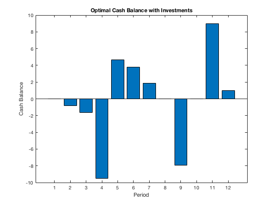
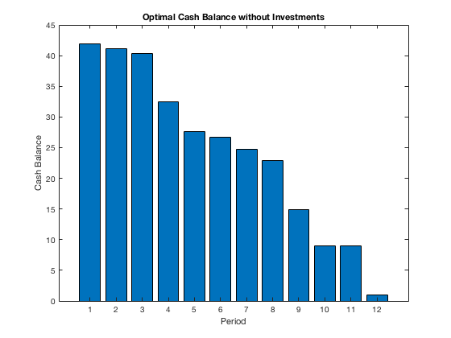

clear all;
final19_q7_data;
cvx_begin
variables x(n) B0
minimize(P'*x+B0)
subject to
-x <= 0
-B0 <= 0
B(1) = (1+rp)*B0
for t=1:T-1
B(t+1)= min((1+rp)*(B(t)+A(t,:)*x-E(t)),(1+rn)*(B(t)+A(t,:)*x-E(t)))
end
E(T)-B(T)-A(T,:)*x <= 0
cvx_end
cvx_begin
variable D0
minimize(D0)
subject to
-D0 <= 0
D(1) = (1+rp)*D0
for t=1:T-1
D(t+1)=min((1+rp)*(D(t)-E(t)),(1+rn)*(D(t)-E(t)));
end
E(T)-D(T) <= 0
cvx_end
disp("Optimal values of x:")
disp(x)
disp("Optimal value of B0:")
disp(B0)
disp("Optimal total initial investment:")
disp(P'*x+B0)
disp("Optimal investment without bonds:")
disp(D0)
figure(1)
bar(1:T,B)
title('Optimal Cash Balance with Investments')
xlabel('Period')
ylabel('Cash Balance')
figure(2)
bar(1:T,D)
title('Optimal Cash Balance without Investments')
xlabel('Period')
ylabel('Cash Balance')
B =
cvx real affine expression (scalar)
B =
cvx mixed concave/real affine expression (1x2 vector)
B =
cvx mixed concave/real affine expression (1x3 vector)
B =
cvx mixed concave/real affine expression (1x4 vector)
B =
cvx mixed concave/real affine expression (1x5 vector)
B =
cvx mixed concave/real affine expression (1x6 vector)
B =
cvx mixed concave/real affine expression (1x7 vector)
B =
cvx mixed concave/real affine expression (1x8 vector)
B =
cvx mixed concave/real affine expression (1x9 vector)
B =
cvx mixed concave/real affine expression (1x10 vector)
B =
cvx mixed concave/real affine expression (1x11 vector)
B =
cvx mixed concave/real affine expression (1x12 vector)
Calling SDPT3 4.0: 30 variables, 18 equality constraints
For improved efficiency, SDPT3 is solving the dual problem.
------------------------------------------------------------
num. of constraints = 18
dim. of linear var = 30
*******************************************************************
SDPT3: Infeasible path-following algorithms
*******************************************************************
version predcorr gam expon scale_data
NT 1 0.000 1 0
it pstep dstep pinfeas dinfeas gap prim-obj dual-obj cputime
-------------------------------------------------------------------
0|0.000|0.000|2.2e+01|6.2e+00|7.4e+03|-8.638509e+02 0.000000e+00| 0:0:00| chol 1 1
1|0.978|1.000|4.9e-01|2.2e-02|4.5e+02|-5.247813e+01 -3.011420e+02| 0:0:00| chol 1 1
2|1.000|1.000|3.5e-07|2.2e-03|4.6e+01|-3.279908e+01 -7.859801e+01| 0:0:00| chol 1 1
3|1.000|0.929|7.7e-08|3.6e-04|3.1e+00|-3.876965e+01 -4.181308e+01| 0:0:00| chol 1 1
4|0.908|0.918|3.9e-07|5.0e-05|3.3e-01|-4.063267e+01 -4.095806e+01| 0:0:00| chol 1 1
5|0.598|1.000|5.2e-07|2.2e-06|1.7e-01|-4.068372e+01 -4.085830e+01| 0:0:00| chol 1 1
6|0.930|0.772|1.4e-07|7.1e-07|4.4e-02|-4.073543e+01 -4.077891e+01| 0:0:00| chol 1 1
7|0.951|1.000|3.6e-08|5.1e-08|1.9e-02|-4.074352e+01 -4.076239e+01| 0:0:00| chol 1 1
8|0.937|0.963|1.1e-08|1.1e-08|9.3e-04|-4.074909e+01 -4.075002e+01| 0:0:01| chol 2 2
9|0.981|0.955|1.4e-07|2.6e-09|5.2e-05|-4.074949e+01 -4.074954e+01| 0:0:01| chol 2 2
10|0.988|0.988|1.7e-09|1.2e-09|6.8e-07|-4.074950e+01 -4.074950e+01| 0:0:01|
stop: max(relative gap, infeasibilities) < 1.49e-08
-------------------------------------------------------------------
number of iterations = 10
primal objective value = -4.07495028e+01
dual objective value = -4.07495034e+01
gap := trace(XZ) = 6.78e-07
relative gap = 8.22e-09
actual relative gap = 7.03e-09
rel. primal infeas (scaled problem) = 1.71e-09
rel. dual " " " = 1.23e-09
rel. primal infeas (unscaled problem) = 0.00e+00
rel. dual " " " = 0.00e+00
norm(X), norm(y), norm(Z) = 3.2e+00, 2.9e+01, 2.5e+01
norm(A), norm(b), norm(C) = 9.0e+00, 3.6e+00, 2.5e+01
Total CPU time (secs) = 0.51
CPU time per iteration = 0.05
termination code = 0
DIMACS: 3.1e-09 0.0e+00 3.1e-09 0.0e+00 7.0e-09 8.2e-09
-------------------------------------------------------------------
------------------------------------------------------------
Status: Solved
Optimal value (cvx_optval): +40.7495
D =
cvx real affine expression (scalar)
Calling SDPT3 4.0: 24 variables, 12 equality constraints
For improved efficiency, SDPT3 is solving the dual problem.
------------------------------------------------------------
num. of constraints = 12
dim. of linear var = 24
*******************************************************************
SDPT3: Infeasible path-following algorithms
*******************************************************************
version predcorr gam expon scale_data
NT 1 0.000 1 0
it pstep dstep pinfeas dinfeas gap prim-obj dual-obj cputime
-------------------------------------------------------------------
0|0.000|0.000|1.5e+01|5.6e+00|7.0e+03|-8.630333e+02 0.000000e+00| 0:0:00| chol 1 1
1|0.364|1.000|9.8e+00|1.7e-02|3.3e+03|-7.994290e+02 -2.122809e+02| 0:0:00| chol 1 1
2|1.000|1.000|4.3e-06|1.7e-03|1.6e+02|-4.021972e+01 -1.954105e+02| 0:0:00| chol 1 1
3|1.000|0.978|7.2e-07|2.0e-04|3.4e+00|-4.065878e+01 -4.402331e+01| 0:0:00| chol 1 1
4|0.974|0.925|2.4e-07|3.1e-05|4.2e-01|-4.153863e+01 -4.195341e+01| 0:0:00| chol 1 1
5|0.955|0.944|2.9e-08|3.3e-06|5.0e-02|-4.176869e+01 -4.181810e+01| 0:0:00| chol 1 1
6|0.986|0.884|5.3e-09|5.4e-07|5.6e-03|-4.178863e+01 -4.179415e+01| 0:0:00| chol 1 1
7|0.976|0.981|1.7e-09|1.1e-08|1.7e-04|-4.179018e+01 -4.179035e+01| 0:0:00| chol 1 1
8|0.989|0.989|2.9e-10|4.8e-10|2.0e-06|-4.179024e+01 -4.179024e+01| 0:0:00| chol 1 1
9|0.996|0.996|2.6e-12|4.3e-11|3.2e-08|-4.179024e+01 -4.179024e+01| 0:0:00|
stop: max(relative gap, infeasibilities) < 1.49e-08
-------------------------------------------------------------------
number of iterations = 9
primal objective value = -4.17902433e+01
dual objective value = -4.17902434e+01
gap := trace(XZ) = 3.20e-08
relative gap = 3.79e-10
actual relative gap = 3.46e-10
rel. primal infeas (scaled problem) = 2.63e-12
rel. dual " " " = 4.35e-11
rel. primal infeas (unscaled problem) = 0.00e+00
rel. dual " " " = 0.00e+00
norm(X), norm(y), norm(Z) = 3.4e+00, 7.1e+01, 4.2e+01
norm(A), norm(b), norm(C) = 7.8e+00, 2.0e+00, 2.9e+01
Total CPU time (secs) = 0.16
CPU time per iteration = 0.02
termination code = 0
DIMACS: 2.6e-12 0.0e+00 9.1e-11 0.0e+00 3.5e-10 3.8e-10
-------------------------------------------------------------------
------------------------------------------------------------
Status: Solved
Optimal value (cvx_optval): +41.7902
Optimal values of x:
0.0000
18.9324
0.0000
0.0000
13.8495
8.9228
Optimal value of B0:
1.7792e-06
Optimal total initial investment:
40.7495
Optimal investment without bonds:
41.7902
 